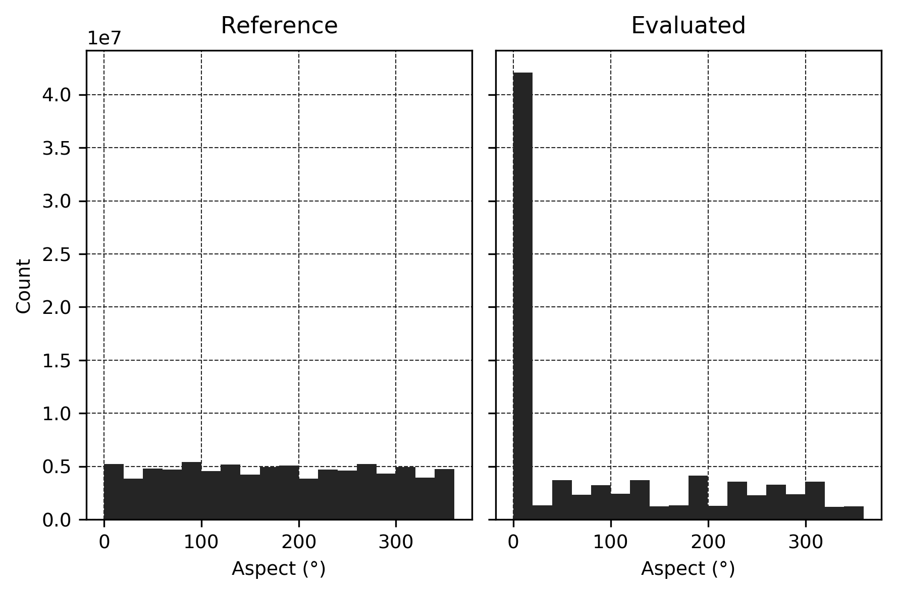
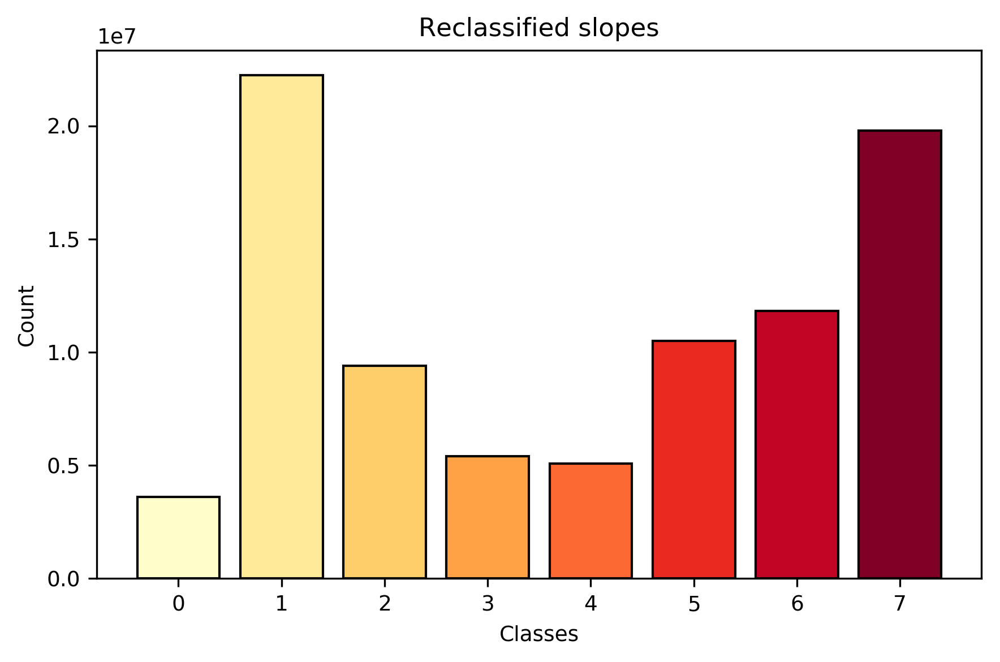

1. General information on products
Path to reference product: /media/quentinp/OS/Users/poqu6/Desktop/MNS_TEST/REF_W.tif
Path to evaluated product: /media/quentinp/OS/Users/poqu6/Desktop/MNS_TEST/DSMOPT_W.tif
Figure 1: Elevations (m) for evaluated and reference products.
Products share the same geometric properties (resolution, extent) and were both masked using the union of their NaN pixels.
Number of columns: 9640
Number of rows: 9115
Number of pixels: 87868600
Spatial resolution in CRS units: 0.5
Projected coordinate system: None
Geographic coordinate system: None
Top-left corner coordinates (x, y) in CRS units: 2045195.42497, 7276858.81729
2. Basic evaluation of vertical accuracy
2.1. Basic statistics
Figure 2: Distribution of elevations (m) for evaluated and reference products.
|
Reference |
Evaluated |
| Minimum |
123.66000366210938 |
99.03999328613281 |
| Maximum |
222.7100067138672 |
235.0399932861328 |
| Range |
99.05000305175781 |
136.0 |
| Mean |
146.0907440185547 |
146.2271728515625 |
| Median |
144.47999572753906 |
145.0399932861328 |
| Std |
6.450394153594971 |
6.067461967468262 |
| RMSE |
3.9241248480610396 |
| NMAD |
1.5270761901855467 |
Table 1: Statistics for elevations (m) of evaluated and reference products.
2.2. Statistical tests
The Pearson test calculates a Pearson correlation coefficient and the p-value for testing non-correlation.
The Pearson correlation coefficient measures the linear relationship between two data sets.
Strictly speaking, Pearson’s correlation requires that each dataset be normally distributed, and not necessarily zero-mean.
The Spearman test calculates a Spearman rank-order correlation coefficient and the p-value for testing for non-correlation.
It is a non-parametric measure of the monotonicity of the relationship between two data sets.
Unlike the Pearson correlation, the Spearman correlation does not assume that both datasets are normally distributed.
The Student test calculates the T-test for the means of two independent samples of scores.
This is a two-sided test for the null hypothesis that 2 independent samples have identical average values.
This test assumes that the populations have identical variances by default.
The Levene test tests the null hypothesis that all input samples are from populations with equal variances.
Levene’s test is an alternative to Bartlett’s test bartlett in the case where there are significant deviations from normality.
Bartlett’s test tests the null hypothesis that all input samples are from populations with equal variances.
For samples from significantly non-normal populations, Levene’s test levene is more robust.
Pearson test: value = 0.8053832650184631 ; p-value = 0.0
Spearman test: value = 0.8112819677527728 ; p-value = 0.0
Student test: value = -142.43965203338183 ; p-value = 0.0
Levene test: value = 126877.27590651513 ; p-value = 0.0
Bartlett test: value = 319984.6380274133 ; p-value = 0.0
3. Advanced evaluation of vertical accuracy - Global analysis
Global analysis of vertical accuracy is performed through the computation of reference and assessed elevations difference. The following formula was used:
dh = href - heval
Figure 3: Elevation difference (m) between evaluated and reference products.
An analysis of absolute and relative elevations differences allows for a better understanding of the overall structure of the assessed product.
Figure 4: Distribution of absolute and relation elevations differences (m).
|
Relative difference |
Absolute difference |
| Minimum |
-96.92999267578125 |
0.0 |
| Maximum |
76.43000793457031 |
96.92999267578125 |
| Range |
173.36000061035156 |
96.92999267578125 |
| Mean |
-0.13682155311107635 |
2.120612382888794 |
| Median |
0.0900115966796875 |
1.0300140380859375 |
| Std |
3.921741485595703 |
3.3017868995666504 |
| Skewness |
0.025427279993891716 |
4.819879531860352 |
| Kurtosis |
28.653207778930664 |
44.979305267333984 |
Table 2: Statistics for absolute and relative elevations differences (m).
3.2. Statistical tests
The normal test tests the null hypothesis that a sample comes from a normal distribution.
It is based on D’Agostino and Pearson’s test that combines skew and kurtosis to produce an omnibus test of normality.
The Kolmogorov-Smirnov test performs a test of the distribution G(x) of an observed random variable against a given distribution F(x).
Under the null hypothesis the two distributions are identical, G(x)=F(x). The KS test is only valid for continuous distributions.
The Shapiro-Wilk test tests the null hypothesis that the data was drawn from a normal distribution.
The kurtosis test tests the null hypothesis that the kurtosis of the population from which the sample was drawn is that of the normal distribution: kurtosis = 3(n-1)/(n+1).
The skewness test tests the null hypothesis that the skewness of the population that the sample was drawn from is the same as that of a corresponding normal distribution.
3.2.1. Relative elevations difference
Normal test: value = 23771770.882894505 ; p-value = 0.0
Kolmogorov-Smirnov test: value = 0.137348896110316 ; p-value = 0.0
Shapiro test: value = 0.7822747230529785 ; p-value = 0.0
Kurtosis test: value = 4874.685864428281 ; p-value = 0.0
Skewness test: value = 95.96148205195134 ; p-value = 0.0
3.2.2. Absolute elevations difference
Normal test: value = 85626474.11992714 ; p-value = 0.0
Kolmogorov-Smirnov test: value = 0.5009586386633237 ; p-value = 0.0
Shapiro test: value = 0.6692779064178467 ; p-value = 0.0
Kurtosis test: value = 5235.419979034963 ; p-value = 0.0
Skewness test: value = 7629.996838993362 ; p-value = 0.0
3.3. Topographic attributes
In order to assess the quality of the evaluated product, elevation difference values can be compared to various topographic attributes, computed using the reference product.
3.3.1. Slope
Figure 5: Slopes (deg) for evaluated and reference products.
Figure 6: Distribution of slope values (deg) for evaluated and reference products.
Correlation analysis
Reference slopes and absolute difference: value = 0.09205159544944763 ; p-value = 0.0
Reference slopes and relative difference: value = 0.25396060943603516 ; p-value = 0.0
3.3.2. Aspect
Figure 7: Aspects (deg) for evaluated and reference products.

Figure 8: Distribution of aspects values (deg) for evaluated and reference products.
Correlation analysis
Reference aspects and absolute difference: value = 0.008389640599489212 ; p-value = 0.0
Reference aspects and relative difference: value = 0.008540753275156021 ; p-value = 0.0
4. Advanced evaluation of vertical accuracy - Local analysis
Local analysis can be performed by using discrete data and analyzing the way errors distribute themselves amongst classes. Various attributes are used and discretized in order to assess the quality of the evaluated product: slope, aspect, roughness, fractal dimension, land use and land cover...
Only topographic attributes computed using reference product have been reclassified.
4.1. Slope
Classes: [1, 2, 3, 4, 5, 6, 7]
Thresholds: [2.0, 4.0, 8.0, 16.0, 35.0, 55.0]
Inclusive thresholds: yes
NaN value placeholder: 0
Figure 9: Reclassified slopes.

Figure 10: Bar plot for reclassified slopes.
| Slope |
| Class |
RMSE |
NMAD |
| 1 | 3.1143099474599385 | 1.052633331298828 |
| 2 | 2.967296148253471 | 1.097132144165039 |
| 3 | 2.9949847034923303 | 1.1267904785156249 |
| 4 | 3.0500774972576603 | 1.2009023803710936 |
| 5 | 3.294957980534875 | 1.438123809814453 |
| 6 | 3.464223545858465 | 1.808773809814453 |
| 7 | 5.289296950230038 | 3.054175003051758 |
Table 3: Error distribution amongst slopes classes.
4.2. Aspect
Classes: [1, 2, 3, 4, 5, 6, 7, 8, 1]
Thresholds: [22.5, 67.5, 112.5, 157.5, 202.5, 247.5, 292.5, 337.5, 360.0]
Inclusive thresholds: yes
NaN value placeholder: 0
Figure 11: Reclassified aspects.
Figure 12: Bar plot for reclassified aspects.
| Aspect |
| Class |
RMSE |
NMAD |
| 1 | 3.819353031238252 | 1.408465475463867 |
| 2 | 3.8187927571758125 | 1.438123809814453 |
| 3 | 3.7002575494532435 | 1.5122357116699219 |
| 4 | 3.7195676443041403 | 1.5418940460205077 |
| 5 | 3.7854083040616686 | 1.5567345245361328 |
| 6 | 3.816236565808488 | 1.5270761901855467 |
| 7 | 3.7533952233240315 | 1.5567119018554687 |
| 8 | 3.8444529950013773 | 1.5122583343505858 |
Table 4: Error distribution amongst aspects classes.
4.3. LULC
Occupation du sol du LIVE (2012)
Classes: [0 1 2 3 4 5 6 7 8]
1 Bâti ; 2 Surface route ; 3 Voie ferrée ; 4 Surface agricole ; 5 Surface arborée ; 6 Surface herbacée ; 7 Eau ; 8 Autre
NaN value placeholder: 0
Figure 13: LULC classes.
Figure 14: Bar plot for LULC classes.
| LULC |
| Class |
RMSE |
NMAD |
| 1 | 3.925124077400066 | 1.4084880981445311 |
| 2 | 3.4224361662797427 | 1.11195 |
| 3 | 2.738460810346031 | 1.1712440460205078 |
| 4 | 1.8541128750501326 | 0.8450702362060546 |
| 5 | 4.865835491185121 | 2.861407141113281 |
| 6 | 2.884342402408462 | 1.1860619018554688 |
| 7 | 11.678798361028461 | 4.462617855834961 |
| 8 | 3.7111844584186295 | 1.452941665649414 |
Table 5: Error distribution amongst LULC classes.